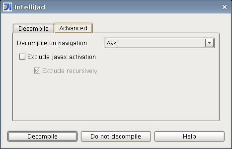

Excluding packages from decompilation
It's possible to exclude all the classes in a package from decompilation in order to
skip over code you're not interested in. The exclusion may apply to the named package,
or the package and all its subpackages.
The effect of exclusion is to cut IntelliJad out of the process for opening a file, i.e. the
class stub will appear in an editor.
Packages can be excluded in two ways:
- By entering the name of the package into the exclusion table, or using the package navigator via the
"..." button. Note that at present, the package navigator is only available in the project-configuration
dialogue.
-
In the decompilation dialog's Advanced tab, you can choose to exclude the package
of the current class. Recursive exclusion for the package may also be defined here.
If a package is excluded using this method, you can later edit the settings using
the exclusion table.

If the "Always exclude packages recursively" checkbox is enabled, recursive exclusion for the package will be
enabled. Additionally, the "Exclude recursively" checkbox of the decompilation dialog will automatically be selected when this option is used.
Once a package has been excluded, you can then control its subpackage exclusion from the exclusion table.
Each exclusion has a flag controlling whether it is enabled. This allows you enable or disable exclusions without having to add or
remove them from the table.